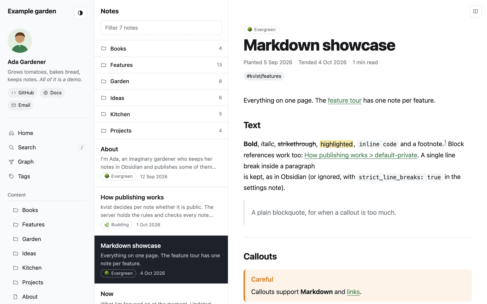
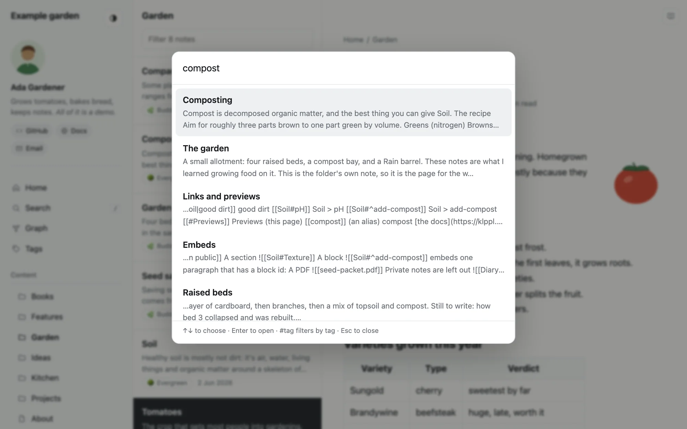
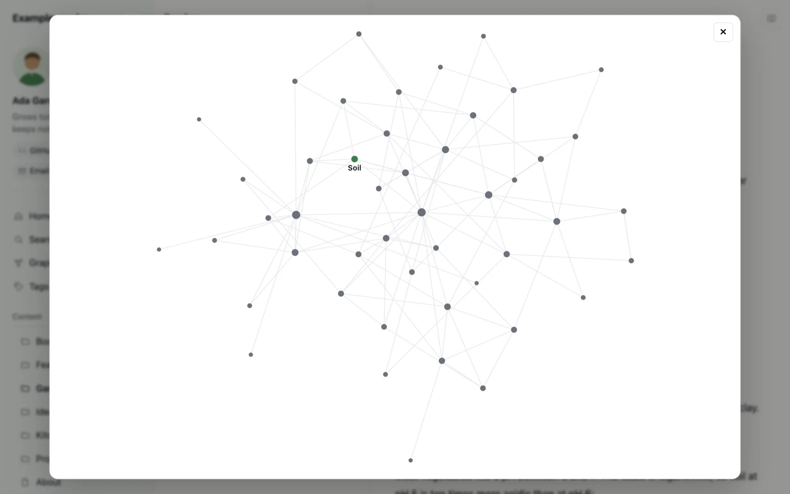
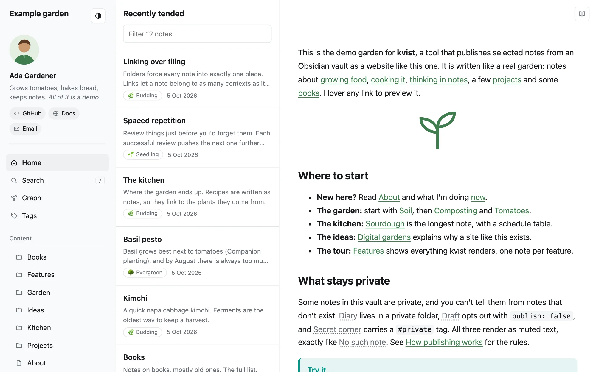

Documentation
Publish your Obsidian notes as a website you own
kvist (Swedish for “twig”) turns the notes you choose into a fast, searchable digital garden on your own server. You write in Obsidian, press Publish, and your site updates. Private notes never leave your device.

How it works
Your vaultWrite notes in Obsidian as usual, on desktop or mobile.
kvist pluginPicks the public notes and uploads only those and the files they use.
kvist serverChecks every note against your rules again, then builds the site.
Your websiteServed over HTTPS from your domain, with search and a graph.
There are two parts you install once:
- The server runs on a small Linux machine (a VPS) with Docker. It stores what you publish, builds the website and serves it. It is a single program, and it needs very little memory.
- The Obsidian plugin connects your vault to the server. It works on desktop and mobile.
The publish rules (which folders and tags are public) live on the server, so a device with an old setting can't publish something by mistake.
What you get
- Obsidian syntaxWikilinks, embeds, callouts, tags, highlights, footnotes, math and Mermaid diagrams.
- Private stays privateLinks to private notes become plain text, with no hint that the note exists.
- Search and graphFull-text search (press /), backlinks and a graph of how notes connect.
- Three-pane themeNavigation, a list of related notes and the note itself, in light and dark, with breadcrumbs, a reader mode and pages that open instantly.
- Your folder is the sitePublish one folder of your vault, and its subfolders become the menu, with short addresses.
- Shares wellEvery note gets a preview image with its title for chats and social media, and notes can be published without being listed.
- Settings in a noteTitle, menu, home page and colors live in a note you edit in Obsidian, on any device.
- Feeds and SEORSS, a sitemap, page metadata and an icon are generated for you, and visitor statistics are one setting away.
- Safe imagesLocation and camera data are removed from photos before they are published.
- Links keep workingRename or move a note, and its old address sends visitors to the new one.
- In your languageMenus, dates and search in English, Swedish, German, French or Spanish.
A look around






What you need
- A Linux server you can reach with SSH, with Docker installed. The smallest plan at most hosts (for example a Hetzner CX22) is plenty.
- A domain or subdomain, such as
garden.example.com, that you can point at the server. - Obsidian on your computer.
- About 30 minutes for the first setup.
Ready? Follow Getting started. It goes from an empty server to your first published note.
Find your way
- Getting startedSet up the server and the plugin, then publish your first notes.
- Publishing notesDecide what is public, keep things private and update your site.
- Writing notesThe Markdown and Obsidian features that work on your site.
- Customizing the siteTitle, home page, menu groups, colors and more.
- Writing a themeYour own CSS, changed templates, or a whole new look.
- Running the serverUpdates, backups, Cloudflare and the command line.
- Domains and HTTPSYour domain with HTTPS, and several sites on one server.
- ConfigurationEvery setting, and which file it goes in.
- TroubleshootingFixes for the problems people run into most.
- RoadmapWhat doesn't work yet, and what's planned.